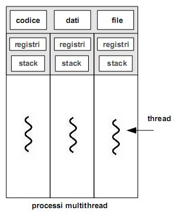
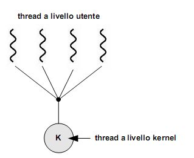
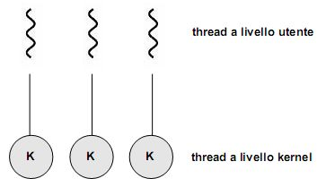
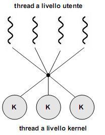
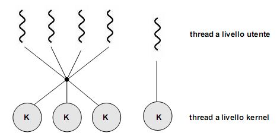

Torna alla pagina di Sistemi Operativi
:: Appunti 2.0 ::
Thread
Dal processo tradizionale...
I processi tradizionali sono programmi in esecuzione con un unico flusso di controllo. Ognuno di essi è un'entità autonoma, ciascuna con il proprio spazio di indirizzamento inaccessibile agli altri. Ma se questa proprietà da un lato garantisce integrità e sicurezza, dall'altro può rappresentare un problema, soprattutto per quelle applicazioni ad alta disponibilità di servizio e basso tempo di risposta (come i server web), dove l'utente - o gli utenti - potrebbero richiedere l'esecuzione di più flussi di controllo nello stesso processo per attività simili.
Ad esempio ho un server web che accetta le richieste concorrenti di più client per le pagine web e tutti gli oggetti in esse contenute. Se fosse eseguito come un singolo processo riuscirebbe a servire un solo client per volta, facendo lievitare i tempi di attesa di tutti gli altri.
Una soluzione semplice potrebbe essere attivare tanti processi che erogano il servizio quante sono le richieste per lo stesso (ovviamente stiamo parlando di sistemi multiprogrammati e multitasking), ma anche in questo caso avrei svantaggi piuttosto rilevanti. In primo luogo sarebbe impossibile prevedere a priori il numero di richieste di accesso, e quindi quanti processi dovrò attivare. In secondo luogo avrei un sistema lento, con una gestione poco furba delle risorse. Se infatti al server web arrivassero più richieste per una stessa pagina, ogni volta il processo di servizio dovrebbe leggerla e inviarla al client, sprecando tempo e spazio.
Sarebbe dunque bello se operazioni simili su dati diversi operassero in modo più correlato, magari su un'area di memoria centrale condivisa a cui i processi possano accedere in modo nativo e naturale. In particolare, vorrei che le applicazioni rendessero disponibili i propri dati ai processi figli in modo semplice, senza doverli ogni volta ricopiare nei rispettivi spazi di indirizzamento, perché è una soluzione inefficiente.
...al concetto di thread
E' sulla base di queste necessità che nascono i thread, ovvero un gruppo di flussi di esecuzione autonomi sullo stesso programma che accedono alla stessa porzione di memoria centrale. Detto in altre parole, è un mini-processo che vive all'interno di un processo vero, autonomo dal punto di vista dell'esecuzione, ma con la stessa "base di dati" a cui attingere, ovvero quella del processo che lo ha generato.
Il thread può essere anche considerato come l'unità base dell'utilizzo della CPU, e comprende un identificatore, un program counter, un set di registri e uno stack, e condivide con gli altri thread che appartengono allo stesso processo la sezione di codice, quella dei dati e altre risorse del sistema operativo (ad esempio i file aperti).
Processi multithread
Se il processo tradizionale (detto pesante) ha un solo thread che fa tutto, un processo multithread è caratterizzato da più flussi di esecuzione di istruzioni in parallelo, operanti contemporaneamente e con parte delle informazioni condivise in memoria centrale. In questo modo ogni thread svolgerà le proprie operazioni e potrà eventualmente trasmetterne i risultati a flussi diversi della computazione, proprio in virtù della condivisione dell'accesso allo stesso spazio di indirizzamento. Ovviamente andranno sincronizzati opportunamente, o potrei avere dati inconsistenti (perché ad esempio modificati da altri).
Un processo multithread è rappresentato nella figura sottostante.

Si può notare come, pur avendo in comune lo stesso codice, due thread diversi hanno comunque contesti specifici su cui operare (quindi registri e stack separati), in modo da poter eseguire operazioni diverse prese da parti diverse del codice. Se infatti condividessero anche stack e registri, finirebbero inevitabilmente per eseguire le stesse operazioni nello stesso momento.
Benefici
I benefici della programmazione multithread sono i seguenti:
- prontezza di risposta, dato che l'eventuale disponibilità di thread liberi garantisce una maggiore rapidità nel fornire il servizio all'utente. Ad esempio, un browser multithread può permettere all'utente l'interazione in un thread mentre con un altro carica un'immagine;
- condivisione nativa delle risorse, dei thread tra loro e con il processo a cui essi appartengono;
- economia nell'occupazione delle risorse, risparmiando memoria nella rappresentazione delle informazioni nel sistema. La creazione e la gestione dei thread è più economica di quella dei processi anche in termini di tempo, ad esempio in Solaris la creazione è 30 volte più veloce;
- sfruttabili dai sistemi multiprocessore, dove i thread possono essere eseguiti in parallelo su processori differenti, raggiungendo così una condivisione efficiente e diretta delle informazioni.
Supporto
Il supporto per i thread può essere realizzato a due livelli:
- nello spazio utente, per gli user thread. Sono supportati al di sopra del kernel e sono gestiti senza che lui ne sappia nulla: è il processo che gestisce i suoi thread interni, il sistema operativo sa solo che esiste, ma non sa cosa fa. Tale supporto è reso possibile dalle librerie di thread, residenti completamente nello spazio utente, che forniscono al programmatore le API per la loro creazione e gestione. Invocare una funzione di libreria si traduce quindi in una chiamata di funzione locale nello spazio utente e non in una chiamata di sistema.
- nel kernel, per i kernel thread. Sono supportati e gestiti direttamente dal sistema operativo, implementando ad esempio una libreria a livello kernel. Al contrario di prima, in questo caso il codice e le strutture dati della libreria risiedono nello spazio kernel, e quindi l'invocazione a una sua funzione si traduce in una chiamata di sistema.
Modelli multithread
Ora che abbiamo distinto thread a livello utente e a livello kernel dobbiamo chiederci come possono essere messi in relazione tra loro, ovvero che modelli multithread sono realizzabili.
- modello molti-a-uno, che riunisce molti thread di livello utente in un unico flusso di controllo sul kernel. La gestione dei thread è fatta dalla libreria nello spazio utente, quindi sarà il programma a dover sincronizzare opportunamente i suoi thread interni in modo che il kernel thread che li gestisce ne veda uno solo. Lo svantaggio di tale mappatura è che se uno dei thread in esecuzione si blocca (ad esempio per un I/O), verranno bloccati di conseguenza tutti gli altri thread che fanno parte del suo gruppo. Per fare un esempio, il thread kernel A gestisce i thread utente Alfa, Beta e Gamma. Se Beta fa un'I/O, si blocca in attesa del risultato. Bloccandosi Beta, anche A si blocca perché è proprio A a dover fornire l'I/O a Beta. Ma se A smazza l'I/O di Beta, allora Alfa e Gamma non possono fare altro che dormire, perché A, che dovrebbe gestirli, non può ascoltarli in quanto impegnato a dare retta all'I/O di Beta! Basta dunque una chiamata bloccante perché tutto il sistema si arresti

- modello uno-a-uno, che mappa ciascun thread utente in un kernel thread. Fornisce molta più concorrenza del modello precedente, permettendo ad un thread di essere eseguito nonostante un'eventuale chiamata bloccante da parte di un altro. Consente inoltre su sistemi multiprocessore che più thread siano eseguiti in parallelo su diversi processori. Lo svantaggio di tale modello è che la creazione di un thread utente richiede la creazione del corrispondente kernel thread, con un conseguente overhead di gestione che grava sul sistema operativo diminuendone proporzionalmente l'efficienza complessiva.

- modello molti-a-molti, che raggruppa in vario modo i thread a livello utente verso un numero inferiore (o equivalente) di kernel thread. Tale numero può dipendere sia dall'applicazione che dalla macchina utilizzata. Con questo modello vengono superati entrambi i limiti dei due precedenti, perché non ho più i problemi di concorrenza del molti-a-uno né limiti nella creazione di thread utente come nell' uno-a-uno. Col molti-a-molti posso infatti creare quanti thread voglio, che potranno comunque essere eseguiti in parallelo.

Una variante comune è quella del modello a due livelli, che mappa molti thread di livello utente verso un numero più piccolo o equivalente di kernel thread, ma permette anche di associarne alcuni in modalità uno-a-uno.

Va da sé che questi modelli si applicano su sistemi multithread. In un sistema operativo con supporto per soli processi pesanti, occorre simularli a livello utente all'interno di un processo utilizzando una libreria di livello utente.
Cooperazione tra thread
La cooperazione tra più thread può essere rappresentata secondo tre modelli di comportamento:
- thread simmetrici, in cui tutti i thread sono equipotenti, ovvero posso scegliere di attivarne uno qualunque per servire una richiesta esterna. Ad esempio, se in un server web mi arriva la richiesta di un client, utilizzerò uno dei thread di servizio disponibili per ascoltare la richiesta, caricare la pagina dal disco e reinviargliela.
- thread gerarchici, con la divisione in due livelli tra coordinatori e lavoratori (worker thread). I primi coordinano i lavori (chi fa cosa, come e quando), ricevendo le richieste esterne e decidendo eventualmente a quale thread lavoratore indirizzarle; i secondi eseguono. Notare come questo modella permetta di avere il coordinatore praticamente sempre reperibile, dal momento che evade rapidamente le sue occupazioni. A livello implementativo è conveniente mappare il thread coordinatore nel kernel, e i worker nel livello utente.
- thread in pipeline, dove ogni thread svolge una porzione del lavoro complessivo, essendo specializzato in un preciso sottoinsieme delle funzioni dell'elaborazione complessiva. Avviene dunque una suddivisione del lavoro, come in una catena di montaggio. Ottengo così una distribuzione dei lavori ed un throughput elevato, dal momento che ogni thread torna in attesa di soddisfare nuove richieste dopo il tempo minimale che impiega per svolgere la sua piccola sequenza di operazioni (il concetto è fare poche operazioni, ma spesso).
Gestione dei thread
Vedremo ora le varie funzioni messe a disposizione per la gestione dei thread.
Creazione
La sintassi della chiamata di sistema per creare un nuovo thread è uguale a quella dei processi, ovvero fork(). La semantica cambia invece sensibilmente. Il problema è il seguente: se il thread di un programma chiama una fork(), verrà creato un nuovo processo con la copia di tutti i thread, o un processo pesante composto da quell'unico thread che aveva lanciato la fork? Dipende dal sistema operativo. Ad esempio nei sistemi Unix viene data la possibilità di scegliere tra le due alternative fornendo due funzioni fork() distinte: quella che duplica tutti i thread e quella che duplica solo il thread che effettua la chiamata di sistema.
Esecuzione
La funzione di esecuzione exec() riveste il thread di un nuovo codice, rimpiazzando quello di partenza. In questo caso oltre la sintassi rimane invariata anche la semantica rispetto alla corrispondente chiamata di sistema per i processi.
A questo punto diventa più semplice decidere quale tipo di fork() andare ad eseguire:
- se dovrò chiamare una
exec() subito dopo la fork(), allora quest'ultima potrà essere benissimo quella che duplica il solo thread chiamante, dato che la prima operazione che eseguirà sarà cancellare sé stesso e caricare qualcos'altro
- se non viene chiamata alcuna
exec() dopo la fork(), allora sarebbe più opportuno duplicare tutti i thread del processo padre.
Quindi, perché due thread appartenenti a uno stesso processo possano eseguire operazioni diverse, posso adottare due strategie: faccio delle call() a porzioni diverse del codice condiviso, oppure utilizzo le exec().
Cancellazione
Cancellare un thread significa terminarlo prima che abbia completato la sua esecuzione, ad esempio in un browser web quando clicco sul pulsante di interruzione del caricamento della pagina.
Il thread che sta per essere cancellato viene spesso chiamato thread target, e la sua cancellazione può avvenire in due modalità:
- asincrona, con terminazione immediata indipedentemente dall'operazione che sta svolgendo in quel momento;
- differita, inserendo il thread in una specie di "lista nera" e verificando periodicamente se sono in punti del codice in cui è possibile terminarlo. Altrimenti attendo semplicemente che il thread finisca la sua computazione, ottenendo di fatto una terminazione ordinaria.
Sincronizzazione e comunicazione
Se ho due processi che lavorano insieme ed ho un thread che vuole comunicare con l'altro processo, la comunicazione può avvenire con tutti i thread del processo destinatario, con un loro sottoinsieme o con uno specifico.
Processi leggeri
Abbiamo visto come nel modello multithread molti-a-molti (così come in quello a due livelli, di cui è una variante) i thread a livello utente vengano mappati su un numero inferiore (o al più uguale) di kernel thread. Diventa dunque opportuna una coordinazione tra kernel e libreria dei thread, effettuando una loro schedulazione in modo da aggiustarne dinamicamente il numero nel kernel, migliorando così le prestazioni complessive del sistema.
Se il kernel supporta nativamente tale schedulazione non ci sono problemi, ma in caso contrario? Una soluzione potrebbe essere "mascherare" i thread da processi, così che il sistema operativo possa sfruttare gli algoritmi che già conosce e implementa per ottenere il multi-tasking. E' a questo scopo che in molti sistemi sono state introdotte delle strutture dati intermedie fra i thread a livello utente e quelli a livello kernel, detti processi leggeri (lightweight process, LWP). Dei processi essi detengono tutte quelle caratteristiche che lo rendono autonomo e passibile di context-switching, così da potervi applicare la schedulazione; non ha però un proprio spazio di indirizzamento, condividendo di fatto gran parte della memoria con gli altri thread (livello utente). Sull'altro livello, l'LWP appare alla libreria dei thread utente come una sorta di processore virtuale grazie al quale l'applicazione può schedulare l'esecuzione di un thread utente. Va infine ricordato che la mappatura "thread utente - processo leggero" segue il modello uno-a-uno.
Torna alla pagina di Sistemi Operativi